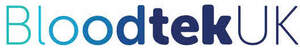
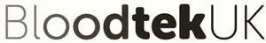

Trade Mark Journal No.2025/033 15 August 2025
UK00004242417 31 July 2025 (5,9,10,35,44)
Mark 1

Mark 2

- Class 5
- Pharmaceuticals; medical preparations; medicinal healthcare preparations; diagnostic preparations; diagnostic materials; diagnostic media, agents and reagents for medical and pharmaceutical use; diagnostic strips; diagnostic testing materials; diagnostic testing materials for medical use; chemical preparations and products for testing for medical purposes and for medical analysis purposes; chemical preparations for testing blood for medical and health purposes; reagents and materials for use in assays of personal samples; reagents and materials for use in assays of blood; reagents for use in analytical and diagnostic tests; preparations and materials for use in relation to food intolerance testing; blood taking and collection kits; preparations and materials sold in kit form for use in taking and/or testing personal samples; preparations and materials sold in kit form for use in taking and/or testing blood samples; veterinary preparations; sanitary preparations for medical purposes; dietetic food, beverages, and substances adapted for medical or veterinary use; food for babies; dietary supplements for human beings and animals; vitamins; vitamin preparations; vitamin supplements; multivitamins; mineral supplements; mineral food supplements; nutritional additives; nutritionally enhanced food and beverages; preparations for supplementing the body with essential vitamins and microelements; health food supplements; health food supplements made principally of vitamins; dietary supplements consisting of vitamins; herbal remedies; plasters, wound dressings; antiseptic wipes; materials for dressings; parts and fittings for all of the aforementioned goods.
- Class 9
- Testing and measuring apparatus and instruments; diagnostic apparatus for laboratory use; recorded and downloadable media; computer software; application software; mobile apps; diagnostics software; health monitoring software; healthcare software; health monitoring software; downloadable application software for consultations, information, advice, analysis relating to health, healthcare, disease, illness, medicine, wellbeing, diet, nutrition, pharmaceuticals, and dietary supplements; downloadable application software for health and wellness and for medical treatments; downloadable software for recording, tracking, analysing, and providing recommendations for improving user health based on diagnostic test results; parts and fittings for all of the aforementioned goods.
- Class 10
- Medical equipment, apparatus and instruments; diagnostic, examination and monitoring equipment, apparatus and instruments; apparatus for medical testing; apparatus for diagnostic tests for medical, health, wellbeing and pharmaceutical purposes; tools for medical, health and wellbeing diagnostics; apparatus, equipment, kits, tools, and instruments for detection, analysis and treatment of deficiencies, disease and illness; testing kits relating to health and wellbeing; medical testing kits; medical, health and wellbeing monitoring and analysis kits; equipment and apparatus for testing for, monitoring and analysing viruses and other illnesses; finger prick tests for health and medical purposes; finger pricking devices being medical instruments for use in drawing blood; lancet devices for medical use in extracting blood for blood tests; medical examination gloves; medical and sanitary masks; tubes, bags, containers and pads for collecting blood, human serum, urine, mucous, and saliva; apparatus and devices for taking and collecting blood and blood samples; blood taking and collection kits; apparatus for blood tests for health and medical use; apparatus for blood analysis; blood monitoring, testing, sampling, collecting, measuring, and monitoring apparatus, devices and equipment; apparatus and equipment sold in kit form for use in taking and/or testing personal samples particularly blood; medical blood test kits for diagnostic purposes; blood cell analysing apparatus for medical use; in vitro diagnostic testing apparatus for medical use; in vitro diagnostic testing apparatus incorporating chemical reagents; kits containing any of the aforesaid products; parts and fittings for all of the aforementioned goods.
- Class 35
- Business management; business organisation; business administration; retail services connected with the sale of testing, measuring and diagnostic kits; retail services connected with the sale of pharmaceuticals, medical preparations, medicinal healthcare preparations, diagnostic preparations, diagnostic materials, diagnostic media, agents and reagents for medical and pharmaceutical use, diagnostic strips, diagnostic testing materials, diagnostic testing materials for medical use, chemical preparations and products for testing for medical purposes and for medical analysis purposes, chemical preparations for testing blood for medical and health purposes, reagents and materials for use in assays of personal samples, reagents and materials for use in assays of blood, reagents for use in analytical and diagnostic tests, preparations and materials for use in relation to food intolerance testing, blood taking and collection kits, preparations and materials sold in kit form for use in taking and/or testing personal samples, preparations and materials sold in kit form for use in taking and/or testing blood samples, veterinary preparations, sanitary preparations for medical purposes, dietetic food, beverages, and substances adapted for medical or veterinary use, food for babies, dietary supplements for human beings and animals, vitamins, vitamin preparations, vitamin supplements, multivitamins, mineral supplements, mineral food supplements, nutritional additives, nutritionally enhanced food and beverages, preparations for supplementing the body with essential vitamins and microelements, health food supplements, health food supplements made principally of vitamins, dietary supplements consisting of vitamins, herbal remedies, plasters, wound dressings, antiseptic wipes, materials for dressings, testing and measuring apparatus and instruments, diagnostic apparatus for laboratory use, recorded and downloadable media, computer software, application software, mobile apps, diagnostics software, health monitoring software, healthcare software, health monitoring software, downloadable application software for consultations, information, advice, analysis relating to health, healthcare, disease, illness, medicine, wellbeing, diet, nutrition, pharmaceuticals, and dietary supplements, downloadable application software for health and wellness and for medical treatments, downloadable software for recording, tracking, analysing, and providing recommendations for improving user health based on diagnostic test results, medical equipment, apparatus and instruments, diagnostic, examination and monitoring equipment, apparatus and instruments, apparatus for medical testing, apparatus for diagnostic tests for medical, health, wellbeing and pharmaceutical purposes, tools for medical, health and wellbeing diagnostics, apparatus, equipment, kits, tools, and instruments for detection, analysis and treatment of deficiencies, disease and illness, testing kits relating to health and wellbeing, medical testing kits, medical, health and wellbeing monitoring and analysis kits, equipment and apparatus for testing for, monitoring and analysing viruses and other illnesses, finger prick tests for health and medical purposes, finger pricking devices being medical instruments for use in drawing blood, lancet devices for medical use in extracting blood for blood tests, medical examination gloves, medical and sanitary masks, tubes, bags, containers and pads for collecting blood, human serum, urine, mucous, and saliva, apparatus and devices for taking and collecting blood and blood samples, blood taking and collection kits, apparatus for blood tests for health and medical use, apparatus for blood analysis, blood monitoring, testing, sampling, collecting, measuring, and monitoring apparatus, devices and equipment, apparatus and equipment sold in kit form for use in taking and/or testing personal samples particularly blood, medical blood test kits for diagnostic purposes, blood cell analysing apparatus for medical use, in vitro diagnostic testing apparatus for medical use, in vitro diagnostic testing apparatus incorporating chemical reagents, kits containing any of the aforesaid products, and of parts and fittings for all of the aforementioned goods; compilation, preparation, collection, analysis and provision of business data and business statistics; business reports; market and marketing information services; compilation, preparation, collection, analysis and provision of business data and business statistics relating to health, healthcare and medicine; business reports, market and marketing information services relating to health, healthcare and medicine; data management, data processing, data systemisation; data management relating to health, healthcare and medicine; business information services; provision of information, advisory and consultancy services in relation to all of the aforementioned services.
- Class 44
- Medical services; medical treatment services; health services; medical clinic services; medical laboratory services; medical analysis services; hospital services; health and patient monitoring services; medical health, wellness and fitness assessment services; health and medical examinations; health screening services; mobile health screening services; phlebotomy services; health and medical testing; collection and preservation of human blood; blood testing; diagnostic testing; diagnostic blood testing; medical, health and wellbeing diagnostic services; imaging for medical and health diagnostics, examination and analysis; medical and health analysis for diagnosis and treatment; medical laboratory services for the analysis of blood samples taken from patients; blood testing being medical analysis services for diagnostic and treatment purposes provided by medical laboratories; nursing services; pathology services; treatment of patients; hygienic and beauty care for human beings or animals; pharmaceutical services; cholesterol testing; testing for allergies and food intolerances; testing of human serum and tissues; DNA and genetic testing services; patient rehabilitation services; processing of medical samples; analysis of human serum, tissues, fluids for medical treatment and diagnoses; provision of medical reports relating to medical examination, diagnosis, treatment, analysis; diabetes testing and screening; dietary and nutrition guidance; diet planning and supervision; nutrition and dietary advice, consultation and information services; dietician and nutritionist services; vitamin therapy; vitamin injections; diet, food and nutrition counselling; weight management services; weight management advice, consultation and information services; preparation and fulfilment of prescriptions; pharmacy services; pharmacy advisory services; health assessment; health risk assessment; providing personalised healthcare and medical information to assist in making health, wellness and nutritional decisions and changes; providing healthcare information; providing healthcare information over the Internet; information, advisory and consultancy services in relation to all of the aforementioned services.
Healthtekuk Limited
Representative: Murgitroyd & Company